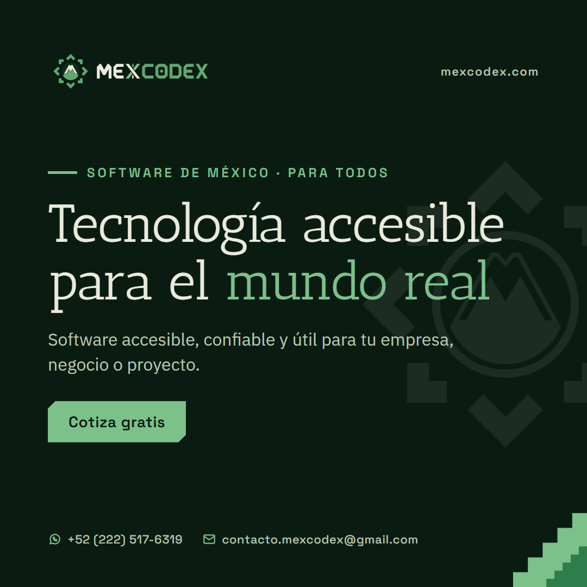
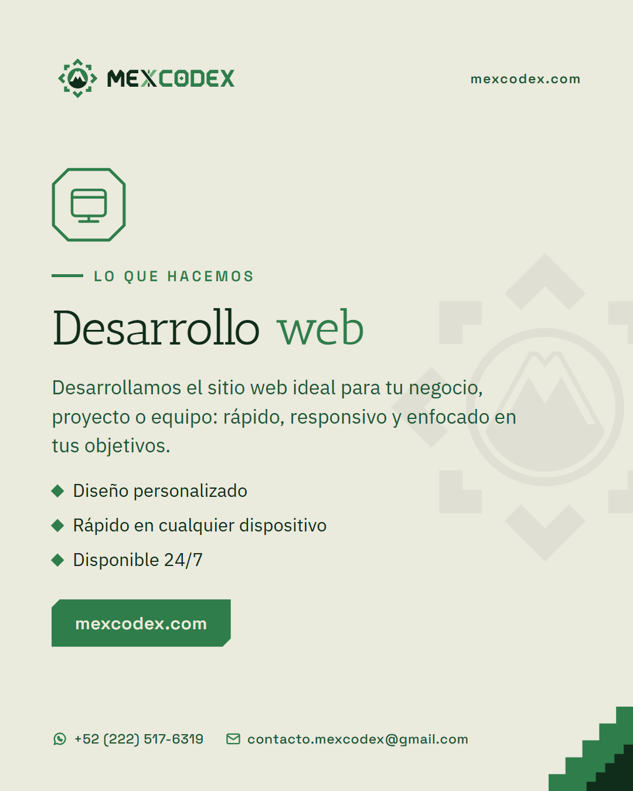
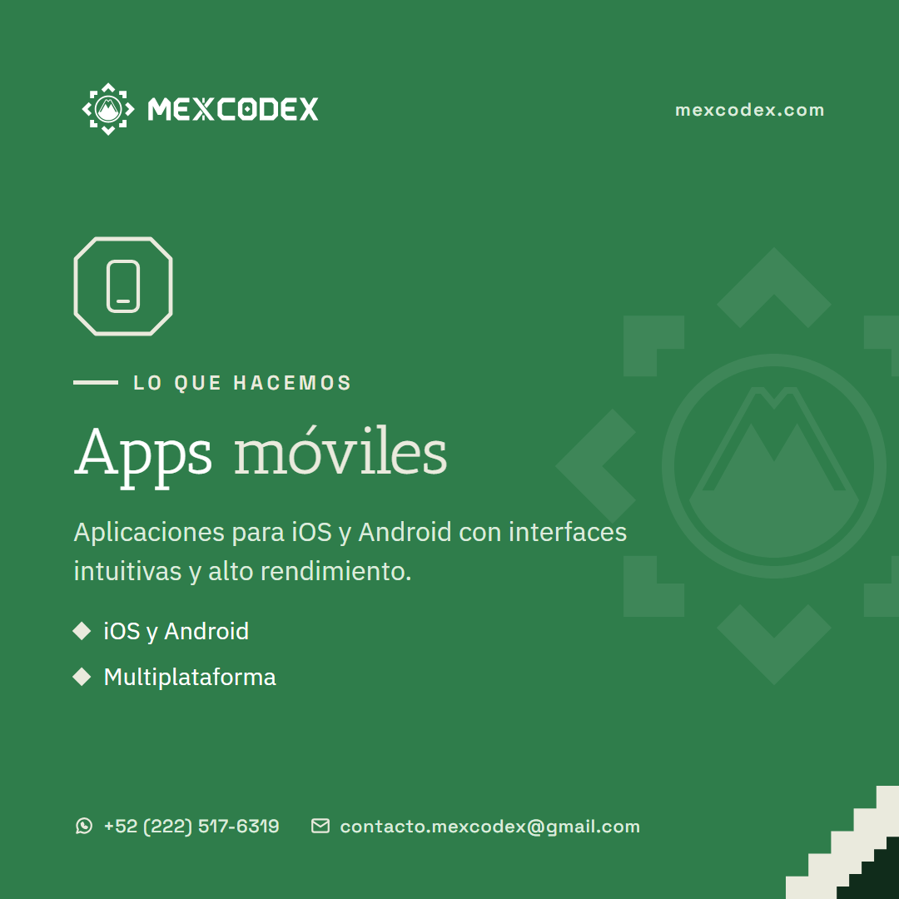
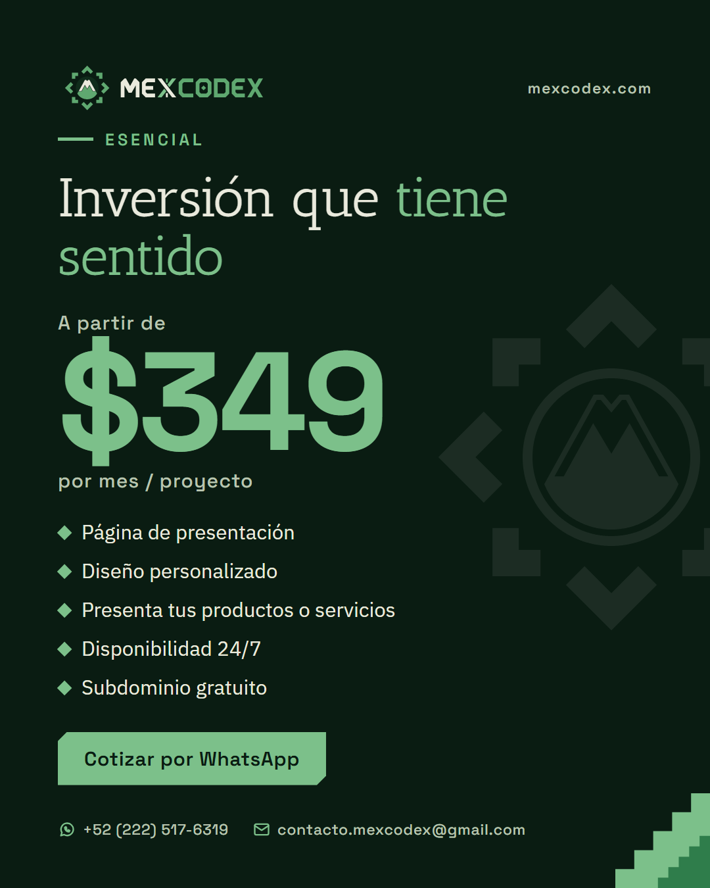
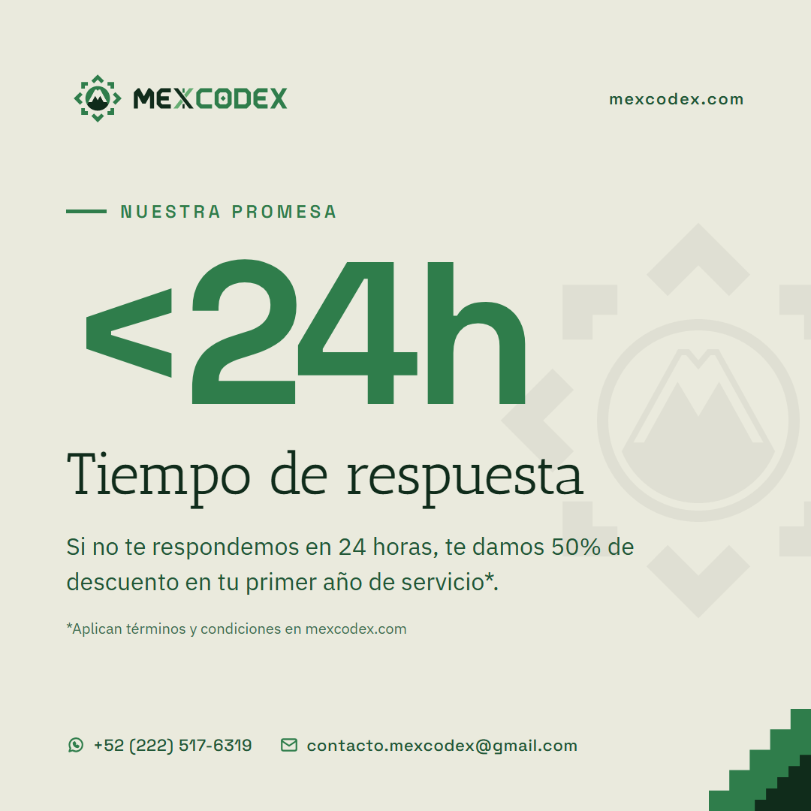
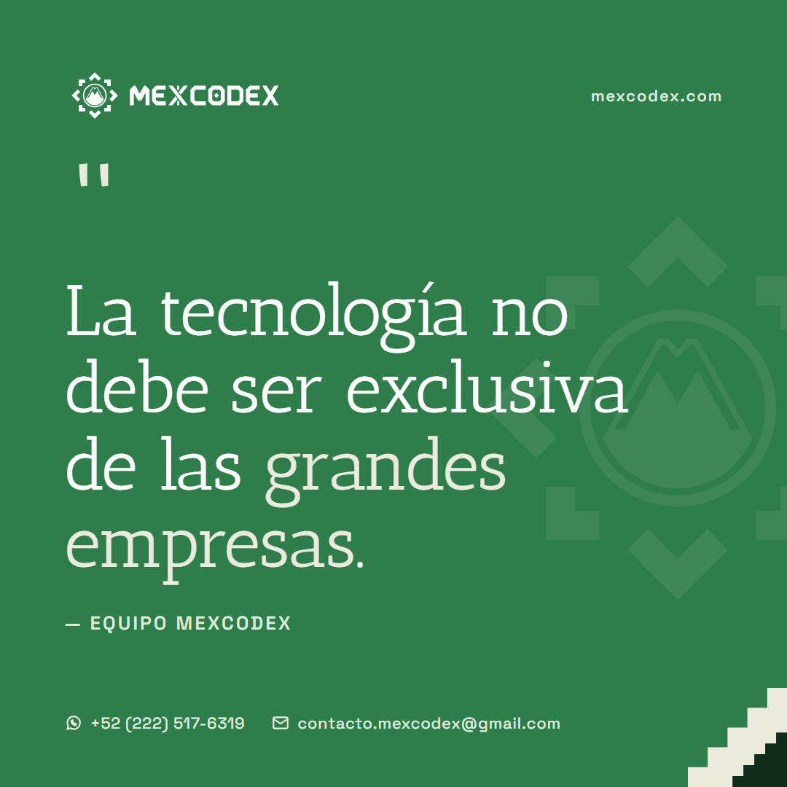
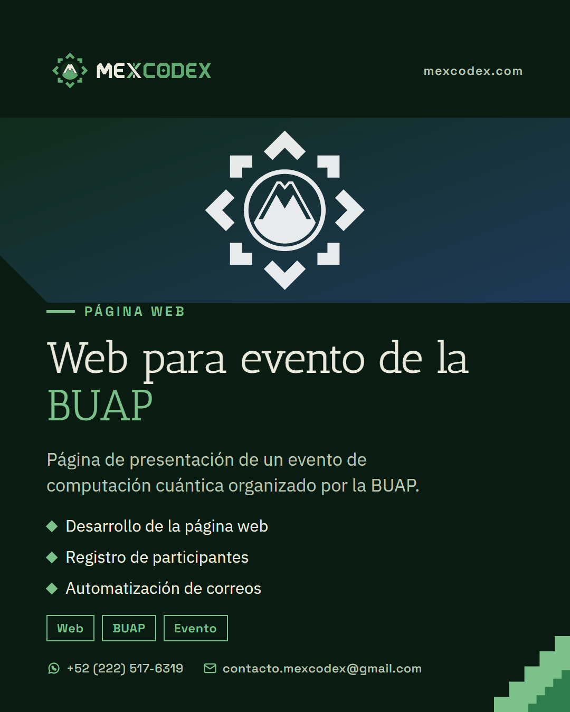
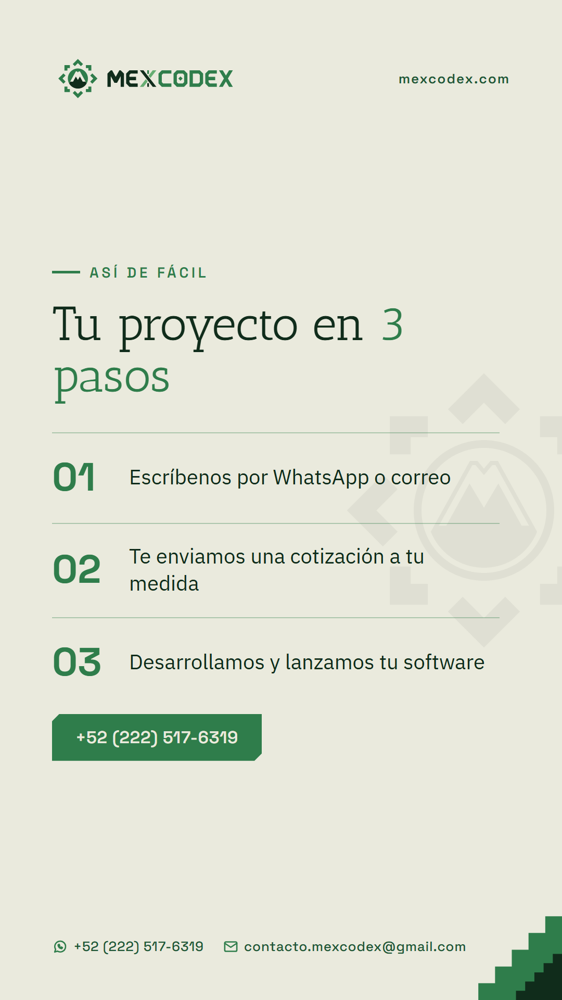

Plantillas de publicaciones

lanzamiento · anuncio · cuadrado · noche
servicio-web · servicio · vertical · claro
servicio-apps · servicio · cuadrado · jade
precio-esencial · precio · vertical · noche
dato-respuesta · dato · cuadrado · claro
frase-democratizar · frase · cuadrado · jade
proyecto-buap · proyecto · vertical · noche
pasos-cotizar · lista · historia · claro